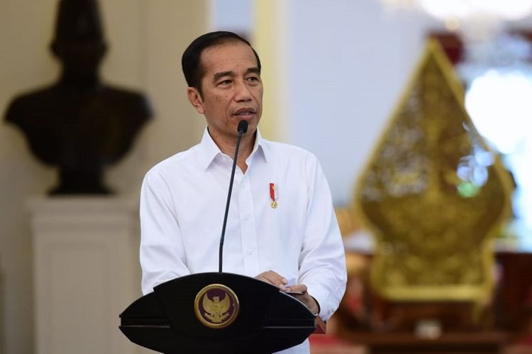

BREAKING NEWS: Pemerintah Larang Mudik

Pemerintah akan melarang mudik untuk mencegah penyebaran
virus corona Covid-19. Hal itu ditegaskan Jokowi dalam rapat terbatas
lewat video conference, Selasa (21/4/2020). "Pada rapat hari ini, saya ingin menyampaikan juga bahwa mudik semuanya akan kita larang," kata Presiden Jokowi. Baca juga: Kemenhub: Jika Mudik Dilarang, Jalan Tol Tutup Ia meminta jajarannya segera mempersiapkan segala hal yang berkaitan dengan larangan mudik ini. Dalam rapat sebelumnya, pemerintah diketahui belum melarang mudik dan hanya
menyampaikan imbauan agar masyarakat tak pulang ke kampung halaman.
Pemerintah akan melarang mudik untuk mencegah penyebaran
virus corona Covid-19. Hal itu ditegaskan Jokowi dalam rapat terbatas
lewat video conference, Selasa (21/4/2020). "Pada rapat hari ini, saya ingin menyampaikan juga bahwa mudik semuanya akan kita larang," kata Presiden Jokowi. Baca juga: Kemenhub: Jika Mudik Dilarang, Jalan Tol Tutup Ia meminta jajarannya segera mempersiapkan segala hal yang berkaitan dengan larangan mudik ini. Dalam rapat sebelumnya, pemerintah diketahui belum melarang mudik dan hanya
menyampaikan imbauan agar masyarakat tak pulang ke kampung halaman.